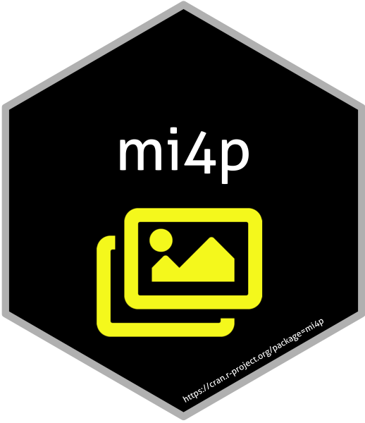

vignettes/Intromi4p.Rmd
Intromi4p.Rmd|  |
This vignette is an introduciton to the mi4p R package (Multiple Imputation for Proteomics), proposed by Marie Chion, Christine Carapito and Frédéric Bertrand. The package is dedicated to dealing with multiple imputation for proteomics.
The following material is available on thr Github repository of the package (https://github.com/mariechion/mi4p/).
The Functions folder contains all the functions used for the workflow.
The Simulation-1, Simulation-2 and Simulation-3 folders contain all the R scripts and data used to conduct simulated experiments and evaluate our methodology.
The Arabidopsis_UPS and Yeast_UPS folders contain all the R scripts and data used to challenge our methodology on real proteomics datasets. Raw experimental data were deposited with the ProteomeXchange Consortium via the PRIDE partner repository with the dataset identifiers PXD003841 and PXD027800.
This website and these examples were created by M. Chion, C. Carapito and F. Bertrand.
You can install the released version of mi4p from CRAN with:
install.packages("mi4p")You can install the development version of mi4p from github with:
devtools::install_github("mariechion/mi4p")